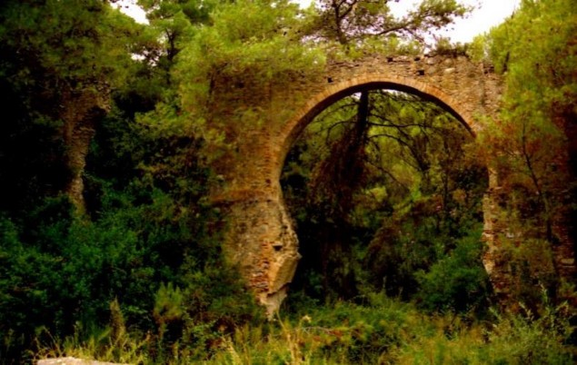

Istruzioni:
l’ordine delle foto non segue una logica temporale né spaziale; segue mentalmente una sequenza emozionale, e quindi può essere seguita entrando nel flusso in qualsiasi punto ed in maniera casuale. Alcune foto hanno un commento singolo, altre seguono un commento che le raggruppa, altre non hanno commento. Tutte hanno una didascalia con luogo e tempo dello scatto. Buona visione.
Oriente, /o.rièn.te/ sostanivo maschile
1. Uno dei quattro punti cardinali, corrispondente alla direzione dalla quale sorge il sole; levante, est. “il cammino apparente del sole si svolge da oriente a occidente”.
2. Denominazione riservata, secondo un criterio assoluto o relativo, a territori o paesi situati o tradizionalmente considerati a est, in contrapposizione a quelli europei: l’Estremo Oriente; il Medio Oriente (o il Vicino Oriente); l’oriente europeo; il complesso di civiltà e culture dei paesi asiatici (contrapposte a quelle occidentali).
Dizionario Google (Oxford Languages).
|  |
| Canale Scuruso – Villapiana – (Italia) San Vito – Antico acquedotto. 1990 (circa). |
Io lascio un bianco e torbido solco, acque pallide, volti più pallidi, dovunque io navighi. I flutti gelosi si gonfiano lungo le fiancate per sommergere la mia traccia. Facciano pure, ma prima io passo.
Ahab dalla finestra della sua cabina della Pequod al tramonto. Moby Dick, Or The Whale - Herman Melville
I leave a white and turbid wake; pale waters, paler cheeks, where’er I sail. The envious billows sidelong
swell to whelm my track; let them; but first I pass.
 |
|
Antwerpen – (Belgio). 11 novembre 2010. L’11 novembre in Belgio si celebra il Giorno dell’Armistizio e la fine della I Guerra Mondiale. |
La «profezia» di Hitler del discorso del 30 gennaio 1939
«Oggi voglio essere di nuovo un profeta: Se l’ebraismo finanziario internazionale dentro e fuori l’Europa dovesse riuscire a precipitare ancora una volta i popoli in una guerra mondiale, il risultato non sarà la bolscevizzazione della terra e con ciò la vittoria dell’ebraismo, ma l’annientamento della razza ebraica in Europa (sondern die Vernichtung der jüdischen Rasse in Europa)».
Ad Auschwitz più di 1 milione e mezzo di persone trovò la morte. Anche se detto così non rende ragione di ciò che effettivamente sia successo ad Auschwitz, a Treblinka, a Dachau, Bełżec, Buchenwald, Chełmno, Mauthausen e ancora e ancora. Ancora una volta mi chiedo, Come è stato possibile?
 |
| Auschwitz- Oswiecim – (Polonia). 13 aprile 2009. Arbeit Mach Frei, l’ingresso |
• Giro per l’ex caserma, cercando la solitudine e la riflessione, e in effetti non c’è molta gente, c’è silenzio. Una guida illustra a un gruppo di studenti i supplizi che i nazisti comminavano agli internati. Mi fermo e assisto anche io.
• Entro in alcuni block. L’angoscia è il sentimento che inizia a salire dallo stomaco, verso la gola e gli occhi. Migliaia di oggetti ammonticchiati a testimoniare ogni singola storia: un paio di occhiali, una protesi di gamba, valigie con sopra scritto nomi e provenienza, scarpe, una bambola mutilata … una montagna di capelli.
• I letti a castello; li osservo e mi rendo conto che non riesco a trovare una parola adeguata, in effetti “letti” è un’esagerazione. Fuori un doppio recinto di filo spinato, ancora lì a dimostrare la sua potenza dissuasiva.
(antonio bria da Ultimo Domicilio Conosciuto)
 |
| Auschwitz - Oswiecim – (Polonia). 13 aprile 2009. La recinzione interna. |
In Plaza de Mayo le Madri (Asociación Madres de Plaza de Mayo) hanno manifestato per anni chiedendo giustizia per i loro figli desaparecidos, ossia i dissidenti scomparsi durante la dittatura militare in Argentina tra il 1976 e il 1983. L'associazione è composta da donne che hanno tutte lo stesso obiettivo: rivendicare la scomparsa dei loro figli e ottenerne la restituzione, attività che hanno svolto e svolgono da oltre un trentennio. I figli delle madri di Plaza de Mayo sono stati tutti arrestati e tenuti illegalmente prigionieri ("desaparecidos": letteralmente "scomparsi" in spagnolo) dagli agenti della polizia argentina in centri clandestini di detenzione durante il periodo passato alla storia come la guerra sporca, così chiamata per i metodi illegali ed estranei ad ogni diritto utilizzati dalla giunta militare, e la maggioranza di loro è stata prima torturata ed in seguito assassinata, e fatta sparire nella più assoluta segretezza. Qui (nel 2008) siamo in un’altra situazione …
 |
| Buenos Aires (Argentina) – Plaza de Mayo. 15 marzo 2008. |
 |
| Buenos Aires – (Argentina). San Telmo. Marzo 2008. |
Sul suo volto la tenue fioritura di uno sguardo che, in un altro uomo, sarebbe presto sbocciato in un sorriso. Herman Melville, Moby Dick.
 |
| Riga (Lettonia). Raduno Bikers 15 agosto 2007. |
 |
| Riga (Lettonia). Musicista in strada. 15 agosto 2007. |
 |
| Riga (Lettonia). La casa delle Teste nere (Melngalvju nams), in Piazza del Municipio. 15 agosto 2007. |
• Berlino è già un’altra Berlino. Anche se il muro è onnipresente. È una città proiettata verso il futuro, architetti da tutto il mondo hanno ridisegnato la città là dove correva il muro della separazione.
• E proprio là, a metà strada tra Potsdamerplatz e Alexanderplatz, sta il memoriale alla Shoah: una spianata con migliaia di stele di cemento color grigio.
• I parallelepipedi appaiono a prima vista più o meno della stessa altezza, ma il pavimento che consente di addentrarsi nel reticolo è di altezza diseguale, di modo che entrando tu sprofondi dentro il monumento. Il monumento ti mangia, disorientato sprofondi nell’angoscia. Se voleva questo, l’artista, con me ha raggiunto lo scopo.
(antonio bria da Ultimo Domicilio Conosciuto)
 |
| Berlino (Germania). Monumento memoriale alla Shoah in via Hanna Arendt. Agosto 2007. |
 |
| Berlino (Germania). Potsdamerplatz. Ottobre 2009. |
[…] visito il Museo Ebraico in Lindenstraße. Subito resto colpito dall’Installazione Shalechet – Foglie cadute, con la forte sensazione che non sono io, non sono il solo, anche qui l’artista colpisce tutti, forte, colpisce duro. 10.000 volti in acciaio punzonato sono distribuiti sul pavimento dello Spazio Vuoto della Memoria: accetti l’invito a camminare sui volti e ad ascoltare il fragore prodotto dalle lastre di metallo che sbattono l'una contro l’altra; ma il rumore di metallo che sbatte e l’angoscia per tutti quei morti ti inducono a uscire al più presto dalla sala. Lo fai, ma sei costretto a fare il percorso a ritroso senza poter smettere di calpestare le teste delle vittime della Shoah. (antonio bria da Ultimo Domicilio Conosciuto)
 |
| Berlino (Germania). Museo Ebraico - Lindenstraße. Installazione Shalechet – Foglie cadute. Agosto 2007. |
• Il saggio Lago Alpino gli aveva raccontato dell’eccezionale.
• L’eccezionale è un attimo, ti colpisce, spesso superficialmente, e passa via. A volte ti lascia indifferente, quasi fosse previsto. Passa normalmente, come parte del normale. Ma chi può prevedere gli effetti di uno scavo quotidiano, costante ed insistente, impercettibile in ogni suo istante, ma deflagrante nel momento della riuscita. Niente di eccezionale di sicuro. Ma piano piano, a poco a poco come la goccia d’acqua inerme ed impotente scava la roccia più possente e dura. Poi all’improvviso e senza la possibilità di porvi rimedio, inesorabile scoppia la primavera. La roccia fragorosamente rompe in mille pezzi che nessuno può tenere insieme e tutto sembra chiaro in un attimo. Cristalli di luce illuminano infiorescenze profumatissime.
• Ma com’è che accade?
 |
| Bled Jezero – (Slovenia). Novembre 2006. |
 |
| Coventry (Regno Unito). Youth Social Centre. Novembre 1991. |
 |
| Londra – (Regno Unito). Novembre 1991. |
 |
| Praga – (Repubblica Ceca) – Castello, Cambio della Guardia. Aprile 2005. |
 |
| Ostrava – (Repubblica Ceca). Bambina gioca con un topo nella fontana di Piazza Pereskovo. Settembre 2006. |
Sulla via del ritorno gli domando: “Potrebbe invecchiare in quella casa, Eduard? Finire come un eroe di Turgenev?”. Si mette a ridere, stavolta con un risolino secco ma di cuore. No, non ci si vede. Proprio no. La pensione, la vita tranquilla, non sono cose per lui. Lui per la sua vecchiaia ha un’altra idea.
“Conosce l’Asia centrale?”.
No, non la conosco, non ci sono mai stato. Ma già da bambino ho visto delle fotografie: quelle scattate da mia madre nel lungo viaggio durante il quale mio padre si è occupato di me con affetto maldestro – all’epoca i padri non avevano l’abitudine di occuparsi dei figli piccoli. Erano foto che mi angosciavano e mi facevano sognare. Rappresentavano per me l’assoluta lontananza.
Di tutti i luoghi del mondo, continua Eduard, l’Asia centrale è quello in cui si trova meglio. In città come Samarcanda o Barnaul. Città schiantate dal sole, polverose, lente, violente. Laggiù, all’ombra delle moschee, sotto le alte mura merlate, ci sono dei mendicanti. Un sacco dei mendicanti. Sono vecchi emaciati, con i volti cotti dal sole, senza denti, spesso senza occhi. Portano una tunica e un turbante anneriti dalla sporcizia, ai loro piedi è steso un pezzo di velluto su cui aspettano che qualcuno getti qualche monetina, e quando qualche monetina cade non ringraziano. Non si sa quale sia stata la loro vita, ma si sa che finiranno nella fossa comune. Sono senza età, senza beni, ammesso che ne abbiano mai avuti – è già tanto se hanno ancora un nome. Hanno mollato tutti gli ormeggi. Sono dei relitti. Sono dei re.
Questo sì che gli piace.
Emmanuel Carrère, Limonov. Ultima pagina.
 |
| Buchara – (Uzbekistan). Death Tower. Agosto 2008. |
 |
| Buchara – (Uzbekistan). Death Tower, Fiat 125 Special. Agosto 2008. |
 |
| Buchara – (Uzbekistan). Gypsy girl. Agosto 2008. |
 |
| Samarqand – (Uzbekistan). Registan. Settembre 2008. |
 |
| Samarqand – (Uzbekistan). Registan. Settembre 2008. |
 |
| Samarqand – (Uzbekistan). Timur Amur (Tamerlano) Mausoleum. Settembre 2008. |
 |
| Samarqand – (Uzbekistan). Donne al fresco nel cortile di un Caravanserraglio in attività di cucito e chiacchiere. Settembre 2008. |
 |
| Tallin – (Estonia). Tompea. Agosto 2007. |
 |
| Tallin – (Estonia). Verso Tompea. Agosto 2007. |
Scomparve alla mia vista girandosi dall’altra parte; mai più la vidi, poiché la battaglia volgeva altrove. [Se ne andò girandosi dall’altra parte; mai più la vidi, mentre riparavo all’estero per fuggire al nemico.] Te ne sei andata, facendo il giro più largo, di modo che io potessi guardarti, camminare …
 |
| Berlino (Germania). Alexanderplatz. Ottobre 2009. |
Lupul ulula. Lupul ululà. Castello ululì. Frankenstein Junior.
 |
| Bran – (Romania). Castelul Dracula. Novembre 1999 |
“Videmus nunc per speculum et in aenigmate” («Ora vediamo come attraverso uno specchio, in maniera confusa, distorta”); “Era una bella mattina di fine novembre” (Umberto Eco, dall’Incipit de Il nome della rosa); “Era una notte buia e tempestosa” (Snoopy).
 |
| Mont Saint Michel – (Francia). Settembre 2007. |
C’è un luogo, nei miei pensieri. C’è un luogo nella mia mente. Della mia mente. Da quando ero ragazzo. Un luogo che è tanti luoghi. Che si trova dappertutto. Un luogo minimale. Di piccola città. Di strada poco trafficata. Di un muro di mattoni rossi. Di officina meccanica. Di trattoria vuota. Un luogo fatto di stazione del treno. Di porto di mare, verso est.
 |
| Porto di Colonia – (Uruguay). Marzo 2008 |
“L’estuario del San Lorenzo era una risposta inattesa.
Alle spalle di Guy, seduta sul pagliericcio, Nancy Claus intratteneva le bambine. Spiegava che il fiume, migliaia d’anni prima, s’era scavato una via verso il mare. Aveva eroso il granito, strappato terra alle sponde, abbattuto foreste. Guy pensò che a raccontarla in quel modo, sembrava che il fiume avesse deciso dove passare. In realtà, il San Lorenzo aveva eroso il granito che la corrente gli consentiva, non un granello di più. Aveva abbattuto foreste fin dove le piene riuscivano a salire e strappato la terra che si lasciava strappare.
A ben guardare, pur con tutta la forza delle sue acque, il San Lorenzo s’era dovuto accontentare dell’unico letto possibile. La scelta era soltanto un modo di dire, un punto di vista ristretto, che non teneva conto di troppi dettagli. Allo stesso modo, pensò, gli uomini si convincono di scegliere, ma il cammino che percorrono è sempre l’unico che hanno a disposizione.
Guy era il fiume. Pensò di aver preso la decisione migliore, ma solo perché era l’unica possibile. Il fiume doveva aprirsi la via fino al mare, per non finire in secca e morire.” Manituana – Wu Ming
 |
| Tashkent – Ferghana Highway – (Uzbekistan). Settembre 2008. |
Ballano, danzano. E tu pensi che lo fanno per te. In realtà ballano, danzano per loro, per il loro piacimento. (Rodolfo il Chimico).
 |
| Tashkent – (Uzbekistan). Settembre 2008. Balletto tradizionale al Ristorante Sultan. Fine. |

g.jpg)